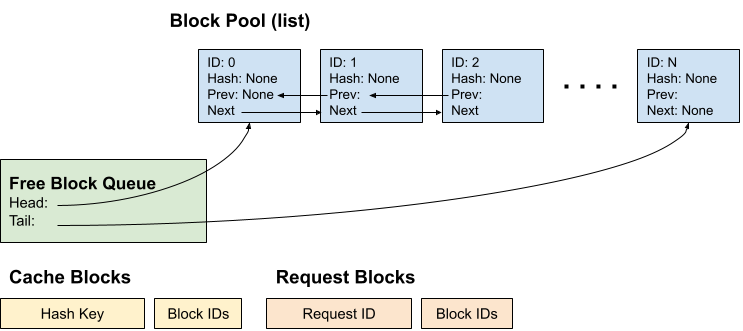
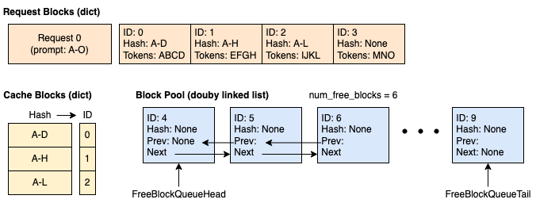
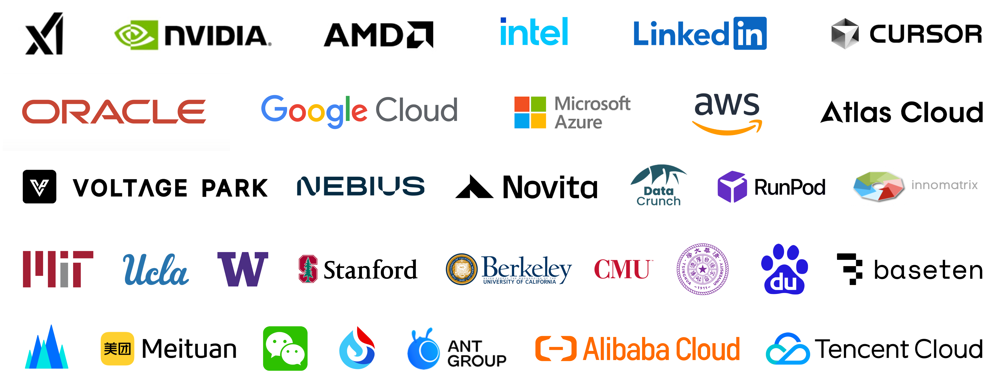

00全景与读法
两家公司同源（UC Berkeley）、同台（推理）、同期（2026 初）商业化，却走了广度与专精两条路。vLLM 的优势在生态广度、社区、硬件中立与资金；SGLang 的优势在 prefix-heavy / agent 场景性能（RadixAttention）与自带的 RL 训练框架 Miles。对 RL-on-NPU，两个引擎都有 Ascend 后端，是 rollout 引擎选型的两个主选项：SGLang 的 RadixAttention 与 Miles 的 R3 / FP8 使其在"RL 训练侧"叙事更完整，vLLM 则以 vLLM-Ascend 的广覆盖见长。
每一节固定三段：vLLM / Inferact（左栏，灰）/ SGLang / RadixArk（右栏，橙）/ 差在哪（下方色块）。数字按来源分三类标注：第三方 独立测量或多方媒体报道、自报 厂商或官方口径、推断 本站分析。原文标注为 provisional 的估值、融资、性能倍数在本文中一律保留该限定语。
一条贯穿全文的线索：性能差距是负载的函数，不是引擎的固有属性。同一对引擎在唯一 prompt 批处理上趋同，在 group rollout 上可差出数倍——决定结果的是前缀共享度、序列长度、并发与到达模式、batch 构成、精度配置与硬件。所有"快多少"都应读作"在什么负载下谁的架构更占便宜"。
01两家公司：同源、同台、同期
2026 年 1 月，vLLM → Inferact：8 亿美元估值、1.5 亿美元种子，a16z + Lightspeed 领投（另有 Sequoia / Altimeter / Redpoint / ZhenFund），创始团队 Simon Mo、Woosuk Kwon、Kaichao You、Roger Wang + Ion Stoica（Databricks 联创），vLLM 运行在 40 万+ GPU 上。SGLang → RadixArk：约 4 亿美元估值、1 亿美元种子，Accel 领投，Intel CEO 陈立武（Lip-Bu Tan）天使，创始为 SGLang 核心团队（LMSYS 系），2026-01 spin-out、2026-05 launch，引擎日均处理万亿 token。两家均出自 UC Berkeley 系，面向同一个高速增长的推理市场。

这张图怎么读
两条链的前三个节点是资本与团队（估值、领投、创始），后两个节点是产品与定位——真正决定长期格局的是最后一个节点。左链的终点是"事实默认"，右链的终点是"专精"，而右链倒数第二个节点（Miles，FP8 + R3）是左链完全没有的一环：RadixArk 的谱系里多出一个训练侧产品。
估值差（8 亿 vs 约 4 亿美元）与 GPU 装机量（40 万+ 对日均万亿 token）分别落在两链的第一与第四节点，读图时注意二者口径不同：前者为媒体报道，后者为各自官方口径，均为 provisional，不能直接换算成市场份额。
vLLM / Inferact
第三方 8 亿美元估值、1.5 亿美元种子（媒体报道，provisional）；a16z + Lightspeed 领投；自报 40 万+ GPU 在跑。团队牌面为 vLLM 核心开发者加 Ion Stoica。
SGLang / RadixArk
第三方 约 4 亿美元估值、1 亿美元种子（媒体报道，provisional）；Accel 领投、Intel CEO 天使；自报 日均万亿 token。团队为 SGLang 原班（LMSYS 系），自带 RL 训练框架 Miles。
差在哪估值差一倍，反映的是社区与生态规模的差异，而非技术能力的差异；原文明确把 RadixArk 描述为"相对便宜，且多一条 RL 训练腿"。推断 两家以同一批投资机构可比的口径同期定价，是少见的"同赛道对照实验"——后续观察指标（托管收入、采用份额、非 NVIDIA 硬件覆盖）在两家之间直接可比。
02引擎之争：PagedAttention vs RadixAttention
承接 D10。vLLM / PagedAttention：用分页管理 KV、解决显存碎片；前缀缓存是精确哈希命中（APC）。通用、稳、生态最大——支持的模型 / 硬件最广，是事实上的默认。SGLang / RadixAttention：用基数树 + cache-aware 调度做自动前缀复用，多轮 / agent / RAG / fork 场景强。整体吞吐比充分优化的 vLLM 高约 29%，prefix-heavy 下可达 6×；唯一 prompt 批任务两者趋同。一句话：vLLM 是"什么都能跑得不错"的默认，SGLang 是"在前缀重度 / agent 上更快"的专精。

这张图怎么读
看下方子图的两条边：从"大量请求共享同一长前缀"出发，左边到 vLLM 的精确哈希命中，右边到 SGLang 的基数树自动复用——差异只发生在这个分岔上。29% 与 6× 两个数字（自报 官方口径，provisional）只挂在右边分支之后，且最下方两条边同时汇入"趋同"节点，说明数字是条件性的：前缀共享度为零时分岔消失。
上方两条链的第二个节点（APC 与 cache-aware 调度）是理解第 04 节的关键：vLLM 的前缀复用是被动命中（内容哈希相同即命中），SGLang 的是主动制造（调度器优先编排能命中缓存的请求）。
vLLM / Inferact
PagedAttention 以分页管理 KV cache，解决显存碎片；前缀缓存为 APC 精确哈希命中。定位是通用、稳、覆盖最广的事实默认。
SGLang / RadixArk
RadixAttention 以基数树组织 KV，cache-aware 调度自动复用前缀；自报 整体吞吐高约 29%（provisional），prefix-heavy 场景可达 6×（provisional）。
差在哪两者都有分页 KV 与前缀缓存，差异在缓存的组织结构（扁平哈希表 vs 树）与调度是否感知缓存。原文给出的 29% / 6× 是官方口径且在各自充分优化的特定基准下得到，原文自己标注为 provisional，并强调唯一 prompt 批任务两者趋同——这是全文最重要的限定语。
03前缀复用的经济学：为什么 2026 的负载天然 prefix-heavy
推理服务里真正花钱的部分是 prefill（前缀计算）与 KV cache 的占用：一个请求进来，模型要先把所有输入 token 过一遍注意力生成 KV 张量，算力开销随上下文长度线性增长。若两个请求共享同一段开头（system prompt、few-shot 示例、工具定义、检索文档），这段开头的 KV 理论上只需算一次、存一份——这就是前缀复用的全部经济学。问题在于：谁能自动、低成本、跨请求地发现并复用这些共享前缀。
2026 的主流 workload 天然 prefix-heavy，是 agentic 应用的结构性特征：多轮对话（第 N 轮 = 前 N−1 轮完整历史 + 新一句，前缀重叠度极高且单调增长）；agent 工具循环（system prompt + 工具 schema + 历史 thought / action / observation 构成不断追加的长前缀，一个任务跑十几个工具步就是十几次高度重叠的请求）；RAG（同一批检索文档反复置于 prompt 头部）；group rollout / best-of-n / fork（同一 prompt 派生多条采样分支，只在生成端分叉——前缀复用收益最极端的场景）。共同点是：前缀不是偶然重合，而是由应用逻辑保证的大段重叠。
vLLM / Inferact
APC 对 system prompt 复用、共享 few-shot、固定文档头这类对齐良好的前缀同样能省掉 prefill，效果可以与 RadixAttention 很接近。
SGLang / RadixArk
树结构在动态分叉、不定长追加、cache-aware 主动调度上更顺手；prefix-heavy 且高并发交错时命中率维持得更好。6× 来自把本该重复做的 prefill 几乎全部省掉。
差在哪四类负载中，两者差距按"前缀对齐程度"排序：固定文档头（RAG）最接近，工具循环与 group rollout 拉开最大。原文的判断是：RadixAttention 的溢价完全投入在"未来的负载越来越 prefix-heavy"这一判断上，而 2026 的 agentic 浪潮恰好在兑现它。推断 对 RL 训练而言，group rollout 正是前缀复用收益最极端的负载，这解释了为何多条 RL 栈默认选 SGLang 做 rollout（见第 08 节）。
04APC 与基数树：命中机制的边界
RadixAttention 把所有活跃请求的前缀组织成一棵基数树：每个节点是一段 token 序列，根到任意节点的路径就是一个被缓存的前缀，对应一块 KV。新请求沿树做最长公共前缀匹配，匹配到的部分直接挂载已有 KV、完全跳过 prefill，只对新增尾部算注意力。两个工程点：一是缓存以树而非扁平哈希表组织，共享前缀自然形成共享路径，分叉点之下各自延伸，天然适配 fork / 多分支；二是 cache-aware 调度——调度器优先编排能命中已有缓存的请求，并据此做缓存淘汰（树上的 LRU），让"命中"从偶发变成被调度主动制造的常态。
vLLM 的 APC（Automatic Prefix Caching）用精确哈希对 KV block 分块缓存，只要前缀的 block 内容逐块哈希相同就命中。差距在于：APC 是块级精确匹配，前缀对齐和 block 边界稍有偏移就可能错过命中。反过来，当 workload 是"每条 prompt 都唯一、几乎没有共享前缀"的批处理（一次性、互不相关的离线打分 / 抽取），前缀复用本身无收益，两套机制都退化为只靠分页 KV 提升显存利用率，此时二者趋同——公认两家差距最小的场景。

这张图怎么读
这张图画的正是原文所说"精确哈希"的数据结构：左下的 Cache Blocks 表是一个扁平的哈希表，键是块内容的哈希，值是块 ID；命中与否只取决于"这一块的哈希是否已在表中"。没有任何结构表达"块 A 是块 B 的前缀"——这就是原文所说"块级精确匹配、对齐稍有偏移即错过命中"的根源。
Block Pool 的双向链表与 Free Block Queue 负责的是分页 KV 的分配与回收（PagedAttention 的显存碎片治理），与前缀复用是两个独立机制。对照第 02 节：SGLang 把"缓存组织"从右下这张表换成一棵树，而"分页分配"这一层两家是同类的——这也是唯一 prompt 场景两者趋同的结构性原因。

这张图怎么读
注意哈希键的写法：第二块的键不是 EFGH 而是 A-H，第三块是 A-L——每块的哈希把它之前的全部内容都算了进去，因此命中一个块就等价于命中从头到该块的整段前缀。这一设计让 APC 在对齐良好的固定前缀（system prompt、固定文档头）上与树结构效果接近，与原文"RAG 长前缀差距收窄"一致。
再看第四块：MNO 只有 3 个 token、未满一块，Hash 为 None，不进缓存表。这就是"block 边界"约束的可视化——不足一块的尾部无法复用，而前缀若在中途偏移一个 token，其后所有块的哈希全部改变。agent 工具循环里每一步都在不定长追加，RAG 文档若在不同 query 间位置微移，命中链就会断在偏移点之后；SGLang 的基数树按 token 序列最长公共前缀匹配，没有这一约束。
vLLM / Inferact
块级精确哈希（图 3、图 4）：对齐良好时命中率高、实现简单；前缀对齐与 block 边界偏移会错过命中；fork 分叉非其最优结构。
SGLang / RadixArk
树上最长公共前缀匹配 + LRU 淘汰 + cache-aware 调度：分叉点之下各自延伸，命中由调度主动制造；不定长追加与高并发交错下命中率维持更好。
差在哪两者真正拉开差距的三个条件是动态分叉、不定长追加、高并发交错；三者都不满足时（唯一 prompt 批处理）趋同，只满足"固定长前缀"时（RAG）接近。原文没有给出不同 block 大小或不同对齐偏移下的命中率数据，29% / 6× 之间的中间值需要按自有负载复现。
05战略差异：单入口与双入口
核心叙事：vLLM / Inferact 是"最广的开源推理标准"，SGLang / RadixArk 是"最快的 agent / 前缀场景 + RL 训练（Miles）"。硬件：vLLM 中立、覆盖最广（含 vLLM-Ascend）；SGLang-Ascend 等覆盖较窄但在追。训练侧：vLLM 主打推理；SGLang 同时握 RL 后训练（Miles：FP8 + R3）。生态 / 资金：前者更大更厚，后者较小更聚焦。团队牌面：Ion Stoica 对 SGLang 原班 + Intel CEO 背书。最大的结构差异：RadixArk 同时卡住"推理 + RL 训练"两个入口，而 Inferact 目前更纯粹是推理，这让 RadixArk 在"前沿 MoE 后训练"这条线上的故事更完整（D09）。

这张图怎么读
图的重点是右下节点有两条入边而左下只有一条。RL 训练入口这个子图里没有 vLLM 的节点——这不是说 vLLM 不能做 rollout（verl 等框架默认支持 vLLM），而是 Inferact 作为公司没有训练侧产品。
"双入口"成立的前提写在第 06 节：rollout 本质上是高吞吐推理，且是 group rollout 这种最极端的 prefix-heavy 负载，所以推理引擎的前缀复用优势可以直接转化为训练采样成本优势。Miles 是否被头部实验室真实采用，是这条边是否成立的关键观察指标。
vLLM / Inferact
推理单入口：最广的开源推理标准，硬件中立、覆盖最广（含 vLLM-Ascend），生态与资金更厚，团队加 Ion Stoica。目前更纯粹是推理。
SGLang / RadixArk
推理 + RL 训练双入口：SGLang 负责服务与采样，Miles（FP8 + R3）把采样能力接进训练循环；硬件覆盖较窄但在追（SGLang-Ascend）。
差在哪Inferact 卖的是分发与默认入口，RadixArk 卖的是"前沿后训练的一致性基础设施"。原文判断后者是粘性更高、更难被纯价格战商品化的位置，但明确附加前提："Miles 真的被头部实验室采用"——这一前提原文标注为未证实。
06训推一致为何是真痛点
RL 后训练的瓶颈在采样，而采样就是推理。一个典型的 RLHF / RLVR 训练步：用当前 policy 对一批 prompt 做 rollout，拿到 response 后打分、算优势、回传梯度更新权重。rollout 阶段占训练墙钟时间的大头，本质是高吞吐推理，且是最极端的 prefix-heavy + group rollout 场景（同一 prompt 采 n 条）。谁的推理引擎快、前缀复用好，谁的 RL 采样就便宜。SGLang 把推理做到领先，Miles 则把这套采样能力直接接进训练循环——同一家、同一引擎覆盖"采样—训练"与"服务"两条价值链。
训推一致（train/infer consistency）：RL 训练里有一类隐蔽而致命的 bug——训练时算 logprob 的引擎与采样 / 服务时生成 token 的引擎不是同一套实现。即便同一权重，不同 kernel、attention 实现、数值精度、batching / padding 都会让同一 (prompt, token) 的 logprob 出现微小漂移；在 RL 里这种漂移会被放大：重要性采样比率 πnew/πold 直接吃 logprob 差，漂移污染优势估计、使 PPO / GRPO 的梯度方向失真，表现为训练不稳、reward 崩塌，或"线下评估好、上线就退化"。用同一引擎做采样和服务，意味着 rollout 分布、训练 reference 分布、部署服务分布同源——把漂移从架构上消掉，而非事后对齐补丁。Miles 强调 FP8 + R3（训推一致，provisional）正是冲着这一点：让低精度采样既快又数值上可信。
vLLM / Inferact
原文未给 vLLM 侧的训推一致方案；vLLM 作为 rollout 引擎时，一致性需由训练框架层处理（原文未展开）。
SGLang / RadixArk
自报 Miles：FP8 + R3 训推一致（provisional，D09）。采样、reference、服务同源，结构性消除 logprob 漂移。
差在哪这一节是原文对"双入口为何更完整"的机制解释，而非实测：原文没有给出 Miles 在具体模型上的漂移量或 FP8 采样对最终 reward 的影响数字。推断 训推一致问题在异构硬件上会被进一步放大（D23 有展开），因此它对昇腾的意义大于对 GPU 单栈的意义——这正是第 10 节把 Miles 落昇腾列为最值得追的工程线的原因。
07分场景性能对比（provisional）
下表均为 provisional（媒体 / 官方口径，非实测，非投资建议），用于说明结构性差异而非给出通用排名。
| 场景 | vLLM 表现 | SGLang 表现 | 说明 |
|---|---|---|---|
| 唯一 prompt 批处理（离线、无共享前缀） | 强：PagedAttention / 分页 KV 解决显存碎片，吞吐高 | 相当：前缀复用无用武之地，退化为同类显存优化 | 两者趋同，公认差距最小；拼 kernel / 调度细节而非前缀机制 |
| 多轮对话 | APC 可缓存上一轮历史前缀，命中良好 | 树结构天然命中单调增长的历史前缀 | SGLang 略优，差距随轮数与并发交错增大 |
| agent 工具循环（ReAct） | APC 块级命中，前缀对齐良好时有效 | cache-aware 调度 + 树结构，主动制造命中 | SGLang 优势明显，工具步越多、前缀越长收益越大 |
| RAG 长前缀（共享文档头） | APC 对固定文档头命中好，效果接近 | 文档前缀复用同样强 | 接近；对齐良好的固定长前缀是 APC 强项 |
| group RL rollout（同 prompt 多采样 / fork） | 可缓存共享 prompt，但 fork 分叉非其最优结构 | 最极端收益场景，prefix-heavy 可达约 6× | SGLang 优势最大；fork / 分支正是基数树设计目标 |
vLLM / Inferact
在五类场景中无一落后到不可用：唯一 prompt 批处理最强，RAG 接近，多轮略逊，工具循环与 group rollout 明显落后。很多场景下"够快 + 生态 / 可移植性"比峰值吞吐更重要。
SGLang / RadixArk
优势随前缀共享度单调放大：批处理趋同 → 多轮略优 → 工具循环明显 → group rollout 最大（自报 约 6×，provisional）。
差在哪原文强调这张表要读作"在什么负载下谁的架构更占便宜"的地图，而非总分榜：决定结果的是前缀共享度、序列长度、并发与到达模式、batch 构成、精度配置、硬件；换一组超参或负载，顺序甚至可能反转。29% / 6× 是在各自充分优化的特定基准下得到的官方口径。
08谁赢哪块，会共存吗
生产部署默认：vLLM（广度、社区、硬件）。prefix-heavy / agent / 结构化输出 / RL rollout：SGLang。大多数团队 2026 年其实在两者之间二选一——很多 RL 栈（AReaL、Miles）默认用 SGLang 做 rollout，而通用服务默认 vLLM。两者长期共存的概率高于一家通吃。

这张图怎么读
这张图不能用来比较两家的采用规模——vLLM 的 README 没有对应的 logo 墙，40 万+ GPU 是另一种口径的数字。它能说明的是 SGLang 采用方的构成：第一行有 NVIDIA、AMD、Intel 三家芯片厂商同时在列（Intel CEO 为 RadixArk 天使投资人），第二、三行以云与 GPU 云为主，第五行是国内互联网大厂——即 SGLang 的采用不局限于"agent 专精"的细分用户，也进入了通用服务与云平台。
与原文"通用服务默认 vLLM、RL 栈默认 SGLang"合看：logo 墙里没有区分"用作服务引擎"还是"用作 rollout 引擎"，因此它是"覆盖较窄但在追"的证据，不是"已追平"的证据。国内厂商一行对本站有直接意义：它们是昇腾栈最可能的 SGLang-Ascend 早期用户。
vLLM / Inferact
赢生产部署默认：广度、社区、硬件覆盖。
SGLang / RadixArk
赢 prefix-heavy / agent / 结构化输出 / RL rollout：AReaL、Miles 等 RL 栈默认以 SGLang 做 rollout。
差在哪两家的赢面按负载切分而非按客户切分——同一个团队可能服务用 vLLM、训练用 SGLang。原文的结论是长期共存概率高于一家通吃；推断 这意味着 RL 框架对两种引擎的双后端支持将成为常态，昇腾适配也需要同时覆盖两条线。
09投资视角（非建议）
估值差：Inferact 8 亿美元对 RadixArk 4 亿美元，前者反映更大社区 / 生态，后者相对便宜且多一条 RL 训练腿。看多 vLLM / Inferact：事实标准、40 万 GPU 分发、a16z + Lightspeed + Ion Stoica 的牌面与渠道。看多 SGLang / RadixArk：性能领先的细分 + 推理与训练双入口 + 更低进入估值。共同风险：开源推理商品化 + 变现难；巨头（NVIDIA、云厂）夹击；价格战压毛利。观察指标：各自托管 / 企业版收入起量、相对采用份额、对非 NVIDIA 硬件（昇腾 / AMD）的覆盖、SGLang 的 RL 训练（Miles）是否被头部实验室真实采用。
| 维度 | Inferact–vLLM | RadixArk–SGLang |
|---|---|---|
| 估值 / 融资 | 约 8 亿美元估值 / 1.5 亿美元种子 | 约 4 亿美元估值 / 1 亿美元种子 |
| 领投 / 关键背书 | a16z + Lightspeed 领投（+Sequoia / Altimeter / Redpoint / ZhenFund）；Ion Stoica（Databricks 联创） | Accel 领投；Intel CEO 陈立武（Lip-Bu Tan）天使；LMSYS 系核心团队 |
| 竞争壁垒 | 最大覆盖面 + 社区 / 生态 + 硬件中立（vLLM-Ascend）+ 事实默认 + 资金厚度 | 性能领先的细分（RadixAttention / agent 负载）+ 推理 × RL 双入口 + 训推一致（Miles FP8 / R3） |
| 变现路径 | 托管 / 企业版 + 广覆盖带来的默认入口与跨硬件部署 | 高性能托管 + 切入前沿后训练采样（更贴近实验室核心预算） |
| 最大风险 | 开源推理商品化、变现难；广而不深、被云厂 / NVIDIA 夹击，差异化溢价弱 | 估值与"性能领先"叙事强绑定；vLLM 在 agent 负载追平则溢价收窄；Miles 采用未证实 |
| 关键观察指标 | 托管 / 企业版收入起量；采用份额；非 NVIDIA 硬件覆盖 | 同上 + Miles 是否被头部实验室真实采用；prefix-heavy 优势能否维持 |
vLLM / Inferact · Bull / Bear
Bull：推理界的事实默认，40 万+ GPU 在跑，覆盖最广、社区最大、硬件最中立，叠加最厚资金与 Ion Stoica 背书，是"卖水给所有人"的分发壁垒，变现只要在巨大装机量上抽一层。Bear：开源推理正在商品化，广度不等于定价权；NVIDIA（TensorRT-LLM）与云厂自有栈两头夹击，8 亿美元估值需尽快证明托管 / 企业版起量。
SGLang / RadixArk · Bull / Bear
Bull：投入 agentic 浪潮，负载越 prefix-heavy 优势越值钱；以 Miles 把推理延伸到 RL 后训练采样，占住更粘、更难被价格战商品化、更贴近实验室核心预算的位置；训推一致是真痛点。Bear：估值一半建立在"性能领先"叙事上，而该优势高度依赖 workload，vLLM 的 APC 在 RAG / 对齐前缀上已能逼近；覆盖面显著小于 vLLM；Miles 被头部实验室真实采用尚未证实。
差在哪两家的 Bear 情形是对称的：Inferact 的风险是"广而不深"，RadixArk 的风险是"深而不广"。原文给出的四个观察指标中，只有"Miles 是否被头部实验室真实采用"是 RadixArk 独有的——它同时是双入口叙事与估值溢价的支点。（以上均为 provisional，非投资建议。）
10对 RL-on-NPU 的意义
rollout 引擎选型：在昇腾上做 RL，rollout 引擎基本就是 vLLM-Ascend 与 SGLang-Ascend 二选一。vLLM-Ascend 覆盖广、社区成熟；SGLang-Ascend 带 RadixAttention 的前缀复用红利（D10）。训练侧：SGLang 一侧有 Miles 的 R3 + 端到端 FP8（D09）——这是"训推一致 + FP8 RL"在 GPU 上的完整答案；能否随 SGLang-Ascend 一起落到昇腾，是 RL-on-NPU 最值得追的工程线。换言之：vLLM 给昇腾最广的 rollout 覆盖，SGLang / RadixArk 给昇腾最完整的 RL 训练蓝图——两条都值得持续跟踪。

这张图怎么读
决策树只有两个判断点，第一个是负载属性，第二个是训练需求——顺序不能颠倒：先看自己的 rollout 是否 prefix-heavy（RL 的 group rollout 几乎总是），再决定是否需要把训推一致与 FP8 一并解决。左分支只有一个终点，右分支有两个，说明 SGLang 一侧的选项空间更大，代价是覆盖更窄。
图中隐含一个未画出的前提：右分支最下方"搭配 Miles"的终点目前只在 GPU 上被验证（原文："能否随 SGLang-Ascend 一起落到昇腾"是待追问题）。因此昇腾上今天可走通的路径实际是三个终点中的前两个。
vLLM / Inferact
vLLM-Ascend：覆盖广、社区成熟、模型与硬件支持稳；给昇腾最广的 rollout 覆盖。
SGLang / RadixArk
SGLang-Ascend：RadixAttention 前缀复用红利（D10）；搭配 Miles（R3 + 端到端 FP8）构成训推一致 + FP8 RL 的完整蓝图，但该蓝图落昇腾尚待验证。
差在哪在 GPU 上是"广度 vs 专精"的选择，在昇腾上则多一层"已落地 vs 待落地"：vLLM-Ascend 的覆盖是现状，SGLang-Ascend 的前缀复用红利是现状，而 Miles 的训推一致 + FP8 是蓝图。推断 对本站最值得追的工程线是 Miles 与 SGLang-Ascend 的结合——它决定昇腾上是否能同时拿到 rollout 加速与一致性保证。
11总表：vLLM vs SGLang
| 维度 | vLLM / Inferact | SGLang / RadixArk | 差在哪 |
|---|---|---|---|
| 公司 | 8 亿美元估值 / 1.5 亿美元种子，a16z + Lightspeed，Ion Stoica，40 万+ GPU | 约 4 亿美元 / 1 亿美元种子，Accel + Intel CEO 天使，LMSYS 系，日均万亿 token | 估值差一倍反映生态规模；后者多一条 RL 训练腿（provisional） |
| 引擎机制 | PagedAttention 分页 KV + APC 精确哈希 | RadixAttention 基数树 + cache-aware 调度 | 缓存组织结构与调度是否感知缓存（图 2–4） |
| 负载经济学 | 对齐良好的固定前缀命中好 | 动态分叉、不定长追加、高并发交错命中维持更好 | 差距随前缀共享度放大，唯一 prompt 趋同 |
| 战略 | 推理单入口：最广开源推理标准、硬件中立 | 推理 + RL 训练双入口：SGLang + Miles（FP8 + R3） | 后者更贴近实验室核心预算，前提是 Miles 被采用 |
| 训推一致 | 原文未给方案 | Miles R3 + FP8（provisional） | 同一引擎采样 / reference / 服务同源，消除 logprob 漂移 |
| 性能 | 批处理最强，RAG 接近，多轮略逊 | 整体高约 29%，prefix-heavy 可达 6×（自报，provisional） | 负载的函数，非引擎固有属性 |
| 赢面 | 生产部署默认 | prefix-heavy / agent / 结构化输出 / RL rollout | 按负载切分，长期共存概率高 |
| 风险 | 商品化、广而不深、NVIDIA 与云厂夹击 | 叙事绑定性能领先、覆盖窄、Miles 采用未证实 | 对称的 Bear：广而不深 vs 深而不广 |
| 昇腾 | vLLM-Ascend：最广 rollout 覆盖 | SGLang-Ascend + Miles：最完整 RL 训练蓝图（待落地） | 现状 vs 蓝图（图 7） |
12原文没给的东西 / 未能核实的东西
以下内容原文未给出或标注为 provisional，复现或引用时需自行补足或保留限定语：
- 估值与融资金额（8 亿 / 1.5 亿、约 4 亿 / 1 亿美元）：媒体报道口径（TechCrunch / Bloomberg / SiliconANGLE / pulse2），provisional，非投资建议；
- 29% 与 6× 的基准条件：官方口径、各自充分优化的特定基准，原文未给模型、序列长度、并发、精度与硬件配置；
- 40 万+ GPU 与日均万亿 token：两家各自口径，不可互相换算；
- Miles 的 FP8 + R3 训推一致：provisional（D09），原文未给具体模型上的 logprob 漂移量或对 reward 的影响；
- Miles 被头部实验室真实采用：原文明确标注未证实，同时是双入口叙事的前提；
- vLLM 侧的训推一致方案：原文未展开；
- APC 在不同 block 大小与对齐偏移下的命中率：原文只给定性描述，29% 与 6× 之间的中间负载无数据；
- SGLang-Ascend 与 vLLM-Ascend 在昇腾上的实测对比：原文未给；
- 本文原图受限于网络代理可达性，取自 vLLM 官方仓库设计文档与 SGLang 官方仓库引用的采用方图；RadixAttention 原理图、性能对比图与融资报道原图未能获取。
一、性能差距是负载的函数。唯一 prompt 批处理两者趋同，group rollout 差距最大；决定顺序的是前缀共享度、序列长度、并发模式、batch 构成、精度与硬件。任何选型都应以自己真实流量的复现基准为准，而不是 29% 或 6×。
二、RL 的 rollout 是最极端的 prefix-heavy 负载。同一 prompt 采 n 条、只在生成端分叉，正是基数树的设计目标——这解释了为何多条 RL 栈默认以 SGLang 做 rollout，也是 RadixArk 双入口叙事成立的技术基础。
三、在昇腾上，vLLM 给覆盖、SGLang 给蓝图。vLLM-Ascend 的广覆盖与 SGLang-Ascend 的前缀复用红利是现状，Miles 的训推一致 + FP8 是待落地的蓝图；两条线都要跟踪，但后者是 RL-on-NPU 最值得追的工程线。
Miles 是否被头部实验室真实采用（双入口叙事与估值溢价的支点）· vLLM 的 APC 在 agent 负载上是否追平 RadixAttention（RadixArk 溢价能否维持）· 两家托管 / 企业版收入是否起量 · SGLang-Ascend 是否随 Miles 的 R3 + FP8 一起落到昇腾 · 非 NVIDIA 硬件（昇腾 / AMD）覆盖的相对进度。